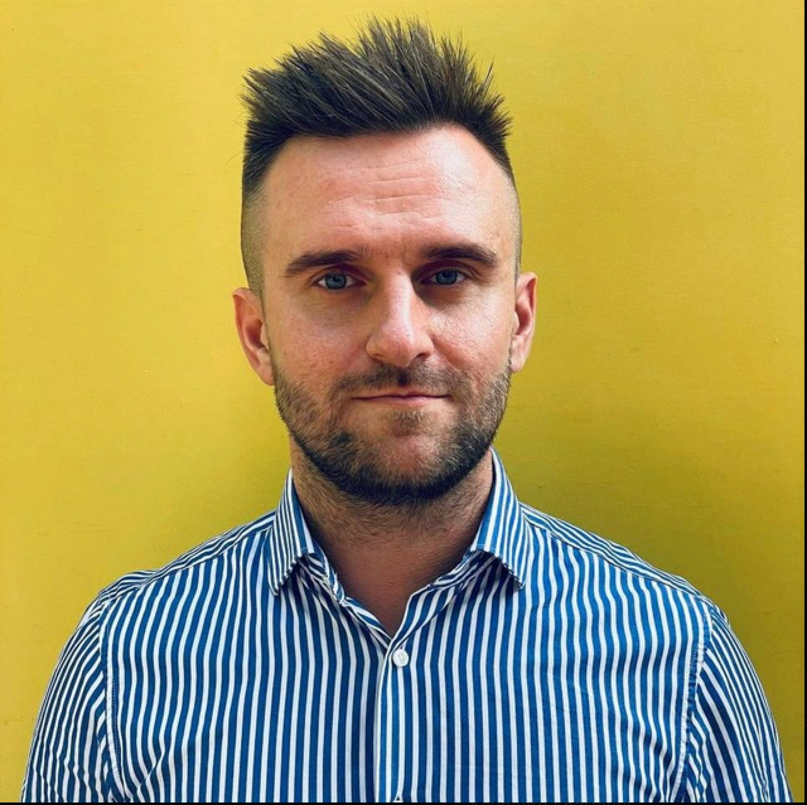

Сильные кандидаты теряются
При большом потоке CV сложно быстро заметить релевантный опыт, редкие навыки и реальные ограничения.
Загрузите вакансию и резюме. GoSitelab помогает быстрее увидеть наиболее релевантных кандидатов, понять логику оценки и согласовать shortlist с клиентом.
Резюме приходят из почты, мессенджеров, таблиц и старых ATS. Понять, кто действительно подходит под конкретную роль, становится ручной и плохо объяснимой работой.
При большом потоке CV сложно быстро заметить релевантный опыт, редкие навыки и реальные ограничения.
Заказчик видит имена, но не всегда понимает, почему именно эти кандидаты оказались первыми.
Критерии для роли остаются в голове рекрутера и каждый новый поиск начинается почти с нуля.
Опишите ключевые требования: опыт, навыки, язык, локацию, зарплатный диапазон и ваши критерии.
Добавьте резюме из текущего потока или базы. Начнем с наиболее удобного для вашей команды формата.
Система показывает соответствие роли, сильные стороны и пробелы по каждому кандидату.
Отправьте понятную карточку кандидата. Клиент может одобрить, отклонить или запросить уточнение.
Продукт не заменяет рекрутера и не принимает автоматических решений. Он собирает факты, сравнивает их с критериями и делает логику shortlist видимой.
Senior Recruiter · 8 лет опыта
Когда одновременно идет несколько ролей, а клиенту нужен не длинный список, а обоснованный shortlist.
Когда важна единая логика отбора, прозрачность для hiring manager и меньше ручной работы на первом этапе.
Начинаем с одной вакансии и согласованного набора CV. Вместе фиксируем критерии, смотрим на качество shortlist и решаем, что нужно команде дальше.
Мы объединяем развитие продукта, работу с рынком, дизайн и разработку. Наша цель: сделать отбор кандидатов быстрее и прозрачнее.

Основатель и CEO
Директор по развитию
Директор по маркетингу
Ведущий product engineer
Product designer
Backend engineer
Нет. AI помогает сравнить резюме с критериями роли и объяснить оценку. Решение о shortlist, отказе или следующем шаге всегда остается у рекрутера.
Нет. Пилот строится вокруг конкретной вакансии и не требует миграции из вашей текущей системы. Интеграции можно обсуждать позже, если продукт окажется полезным.
Формат пилота заранее согласуем с вашими правилами доступа, хранения и удаления данных. На старте используем только данные, которые вы уполномочены передавать для подбора.
Командам, у которых есть реальный поток резюме и потребность быстрее готовить качественный, объяснимый shortlist для клиента или hiring manager.
Мы посмотрим на ваш процесс и скажем честно, где AI-shortlist может сократить ручную работу. Без обязательств и громких обещаний.